Ford Explorer ST z silnikiem 3.0 EcoBoost o mocy 400hp to nie jest hybryda ale niestety w otomoto nie da się wybrać ani wpisać poprawnej wersji
Auto utrzymane w super stanie świeżo po pełnym serwisie gotowe do użytkowani.
6 osobowe bdb wyposażone między innymi nagłośnienie Bang & Olsen , nawigacja , podgrzewane i wentylowane fotele , podgrzewana kierownica , asystent martwego pola widzenia , aktywny tempomat , reflektory full led , samochód sam znajduje wolne miejsce i parkuje , felgi 20 cali z nowymi oponami i wiele innych.
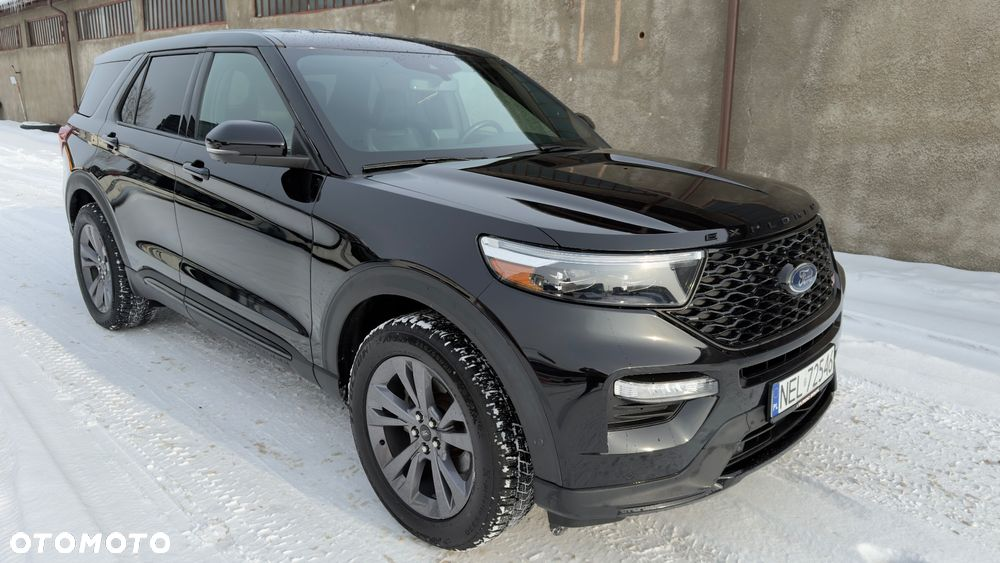
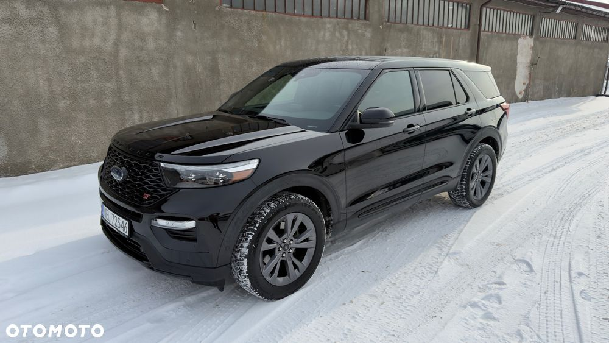
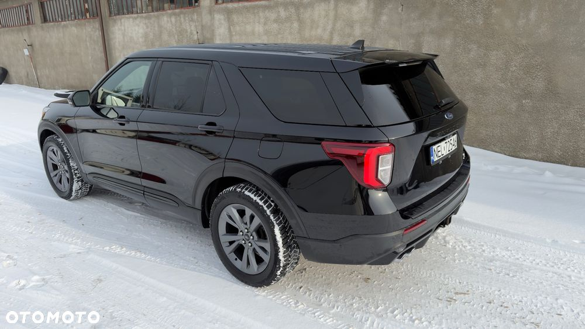
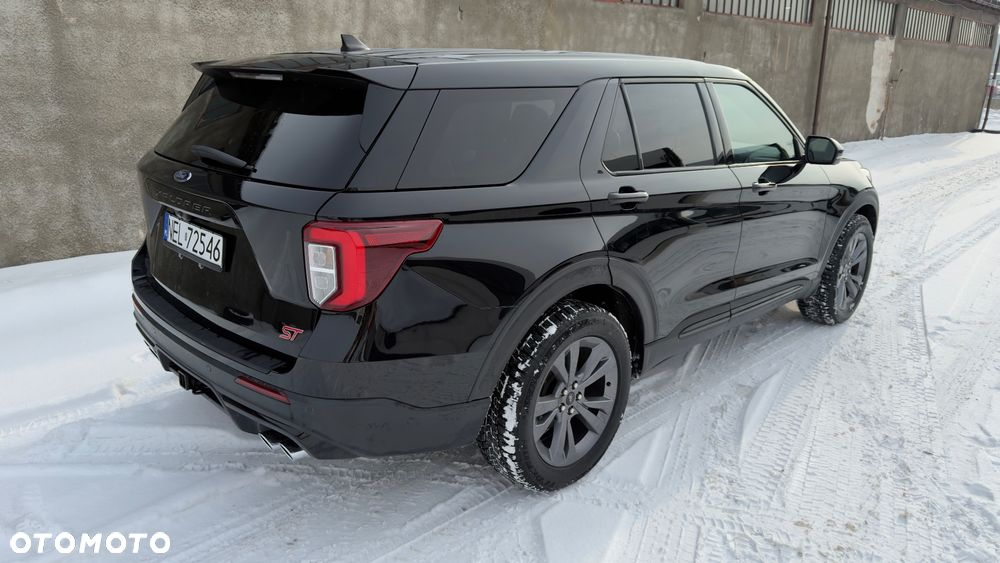
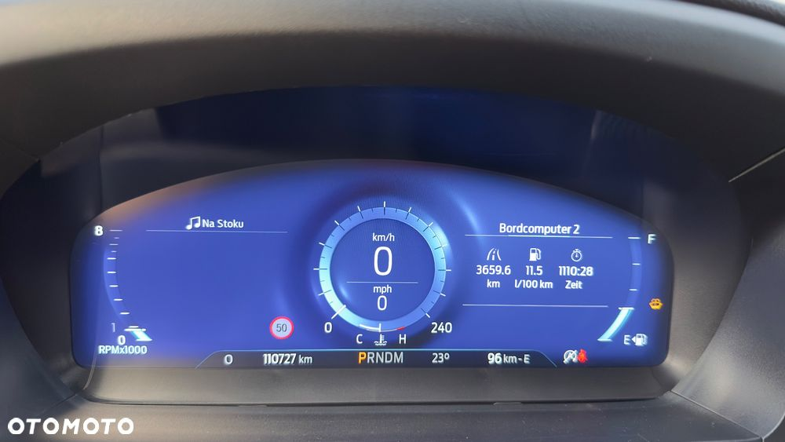
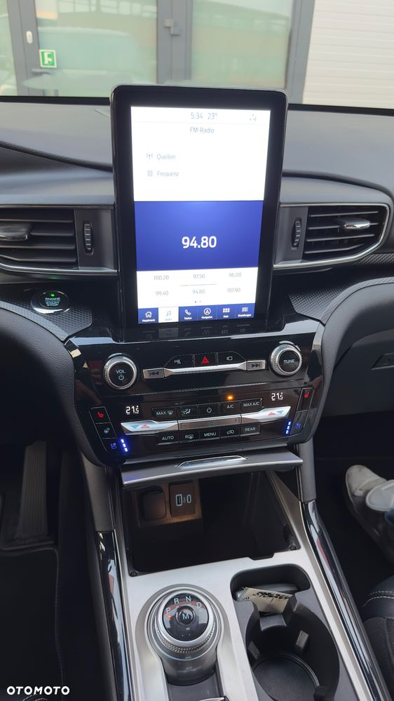
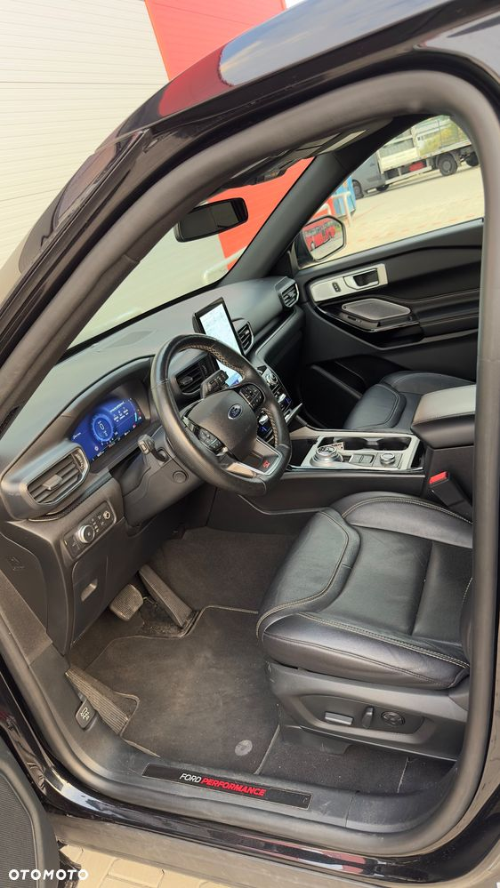
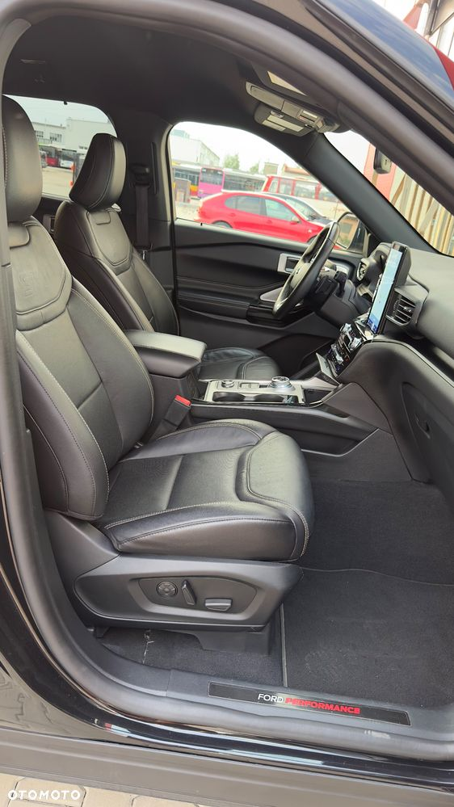
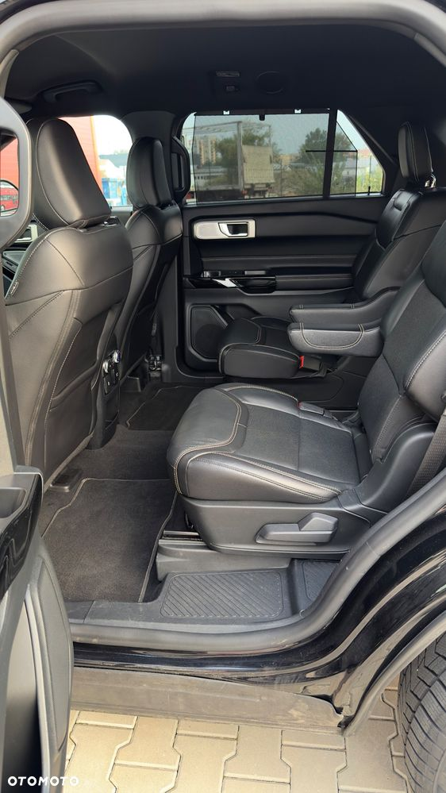
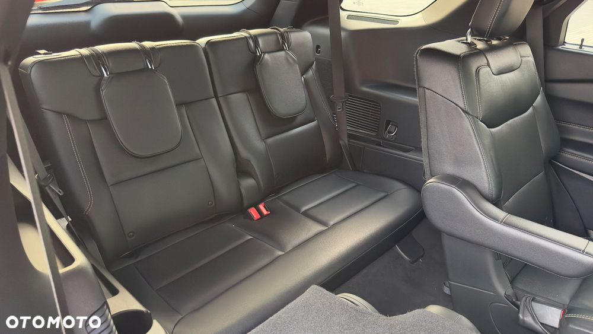
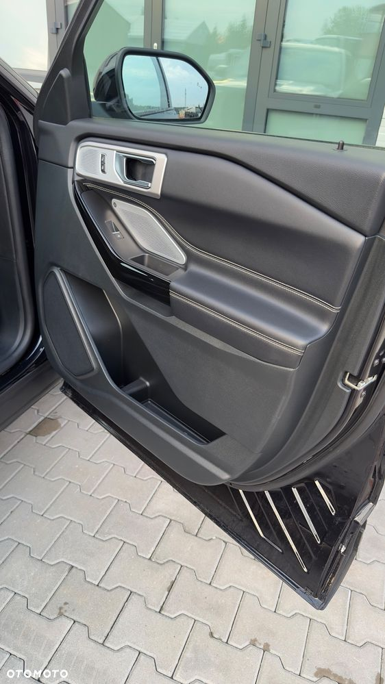
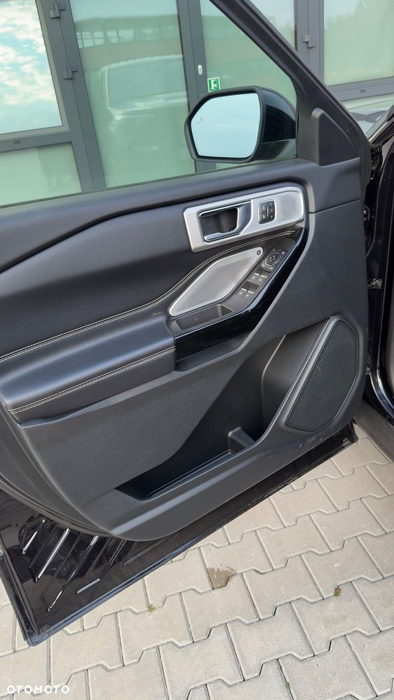
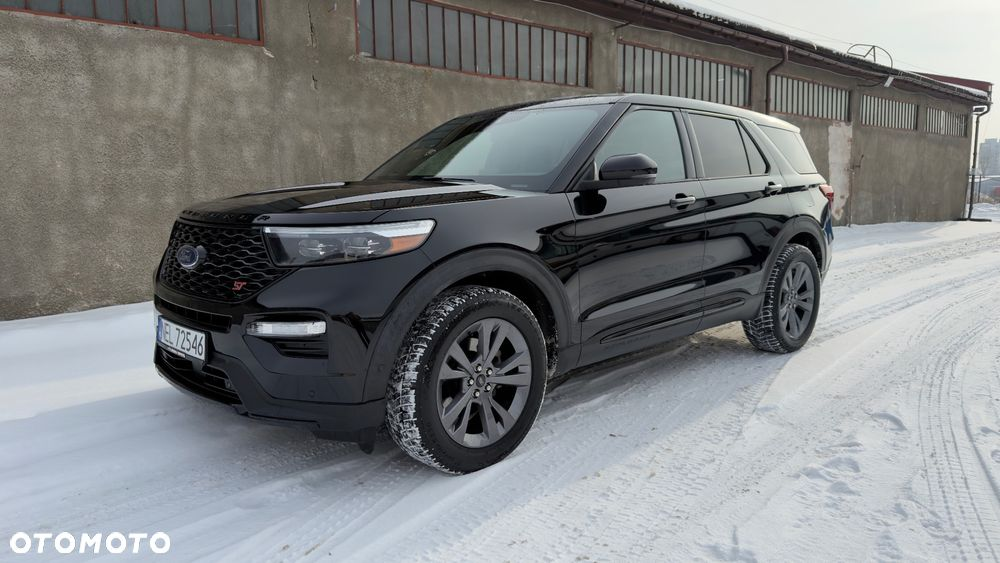